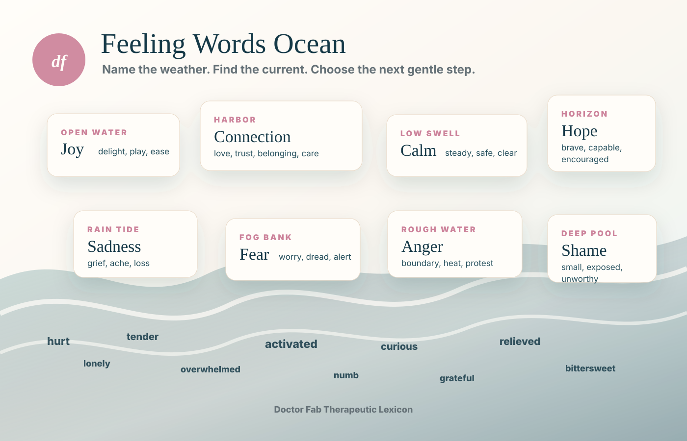

Trauma-informed care for mind, body, and community
Clinical care with a softer landing.
Doctor Fab helps people make sense of what they have carried, build steadier tools for daily life, and move toward healing with safety, clarity, and choice.
The work
Healing is easier to begin when the next step is clear.
Dr. Fabiola Jean Taylor brings trauma-informed clinical insight, nervous system education, mindfulness, and practical tools into a space that feels steady and human. The work is not about performing wellness. It is about building enough safety to tell the truth, practice new patterns, and keep going.
Doctor Fab serves individuals, children, families, caregivers, schools, teams, and community spaces that want care with real language, real tools, and respect for the full person.
Work With Dr. Fab
Three doors into the same mission.
Start with private care, stay connected through the Sanctuary, or bring trauma-informed education into the rooms where people live, learn, work, and lead.
Private Support
A consultation path for people seeking grounded, trauma-informed support for healing, stress, family patterns, or life transitions.
- Begin with what feels most urgent
- Name the kind of care that fits
- Leave with a practical next step
Best for people ready for a private conversation about care.
Start Private SupportHealing Sanctuary
A growing digital home for grounding tools, a guided reflection companion, plain-language teaching, and gentle practices between sessions.
- Short practices you can return to
- Reflection prompts that do not rush you
- Plain-language healing education
Best for between-session support and gentle self-guided tools.
Join the Sanctuary ListWorkshops & Speaking
Trauma-informed conversations for schools, teams, caregivers, wellness events, and community groups that want useful language.
- Caregiver and family education
- Workplace wellness and resilience
- Community healing conversations
Best for schools, teams, events, and caregiver groups.
Plan a Workshop
Meet Dr. Fab
Warm, clinically grounded, and clear about what healing asks of us.
Dr. Fabiola Jean Taylor is a trauma specialist whose work bridges evidence-based care, cultural awareness, somatic practice, and accessible education. Her approach honors the whole context around a person: body, story, family, community, identity, and environment.
Doctor Fab is being built as a place where clinical wisdom and everyday support can meet. It should feel professional enough to trust and human enough to actually use.
Safety before speed
Body and story together
Culture and community matter
Care Areas
Support for what shows up in real life.
Trauma & Stress
Support for experiences that keep echoing through the body, mood, relationships, and daily routines.
Nervous System Tools
Practical ways to notice activation, steady the body, and create more choice under pressure.
Children & Families
Language and support for caregivers, children, and families trying to shift old patterns.
Community Wellness
Education for groups that want trauma-informed care to become part of the culture, not just a concept.
Start here
Pick the care area that feels closest.
Doctor Fab will translate the concern into one grounded next step.
Doctor Fab's Healing Sanctuary
A resource library for the days between the big conversations.
Healing is not only what happens in a session. The Sanctuary is being shaped as a calm, useful place for grounding practices, reflection prompts, and teaching that helps people stay connected to themselves between moments of deeper support.
Get Sanctuary Updates
Try a Sanctuary Tool
Choose the kind of support this moment needs.
Come back to the room first.
- Look for three steady shapes.
- Feel both feet or one hand supported.
- Lengthen one exhale and let the next step be small.
Grounding Library
Short practices for stress, activation, and daily return.
Healing Language
Plain words for repair, boundaries, and nervous system care.
Caregiver Tools
Co-regulation scripts and family support between sessions.
Reflection & Grounding Companion
A calm checkpoint for the moments between sessions.
This gentle companion is built for short, present-tense support: naming what is happening, finding steadier ground, and choosing one small next step without rushing the visitor into a story they do not want to tell.
It is not therapy, diagnosis, emergency care, or a replacement for working with Dr. Fab or another clinician. It is a quiet tool for reflection when a little structure would help.
Need urgent help?
If you are in immediate danger or crisis in the United States,
call 911 or call/text 988. The companion will pause and show
crisis resources instead of continuing an exercise.
Doctor Fab Sanctuary
Not stored here
Take one steady minute.

Resources
Clear language can make healing less lonely.
The resource library will translate therapeutic ideas into words and practices people can actually use: grounding, regulation, repair, boundaries, trauma-informed parenting, and community care.
Starter Lexicon
Better words for hard things.
Regulation
Helping the body return toward steadiness after stress, activation, shutdown, or overwhelm.
Grounding
Simple practices that bring attention back to the present moment, the body, and the room you are in.
Repair
The process of returning to a relationship after rupture with honesty, accountability, and care.
Trauma-Informed
An approach that prioritizes safety, trust, choice, collaboration, empowerment, and culture.
Window of Tolerance
The zone where the nervous system has enough capacity to feel, think, choose, and connect.
Activation
A body state of mobilized energy, often showing up as urgency, tension, anxiety, or irritability.
Boundaries
Clear limits that protect energy, safety, time, and connection without requiring harshness.
Co-Regulation
Using steady presence, tone, rhythm, and connection to help another nervous system settle.
Regulation
Try saying: "My body is asking for steadiness before I solve this."

Feeling Words Ocean
Name the current before choosing the next step.
Feelings often arrive as waves, clusters, or mixed weather. These words help visitors name what is present without forcing the story.
Open Water Joy & Delight
Harbor Love & Connection
Low Swell Calm & Grounded
Horizon Hope & Confidence
Shell Gift Gratitude & Appreciation
Tide Pool Curiosity & Interest
Rain Tide Sadness & Grief
Fog Bank Fear & Anxiety
Rough Water Anger & Boundary Energy
Deep Pool Shame & Self-Consciousness
Soft Shore Hurt & Vulnerability
Storm Surge Overwhelm & Activation
Low Tide Numbness & Shutdown
Unmoored Loneliness & Disconnection
Anchor Line Guilt & Responsibility
Sunset Water Tender, Mixed & Bittersweet
Start Here Builder
Turn the need into a clear first note.
Choose the closest doorway and the site will prepare a concise email starter for Dr. Fab. Share only what feels appropriate for email.
Please do not include crisis details, medical records, or sensitive health information in this form or by email.
Begin here
Send the short note. We can find the next step from there.
You do not need perfect language to reach out. Say whether you are looking for private support, Sanctuary updates, or a workshop, and Doctor Fab will meet you there.
- Choose the closest path.
- Send a short note.
- Get a human next step.